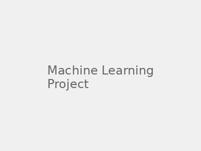
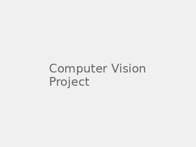
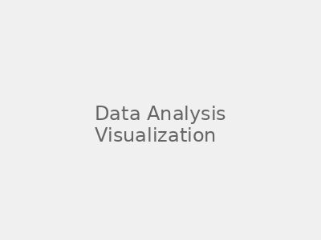

Sreeharsha Paruchuri
I'm a Master's student in Robotic Systems Development at Carnegie Mellon University, where I focus on computer vision, robotics, and AI. I have experience in multimodal learning, reinforcement learning, and 3D vision systems. Previously, I worked as a Pre-Doctoral Research Fellow at TCS Research and as a Research Assistant at the Robotics Research Center, IIIT-H. My research interests include embodied AI, computer vision, and autonomous systems.
{kind=link}
Education |

|
Carnegie Mellon University, School of Computer Science Master of Science in Robotic Systems Development (MRSD) CGPA: 4.11/4.0 | Expected May 2026 Teaching: Introduction to Deep Learning (11-785) Coursework: Learning for 3D Vision, Generative AI, Deep RL |
|
International Institute of Information Technology, Hyderabad Bachelor of Technology in Electronics and Communication Engineering (Honours) Major GCPA: 9.02/10 | July 2022 Awards: Deans Merit List, Undergraduate Research Award Coursework: Statistics in AI, Topics in Applied Optimization, Mobile Robotics |
Industry Experience |
|
Mach9
May 2025 - August 2025
Perception Software Engineering Intern
Computer Vision and Generative AI
|
|
|
|
Tata Consultancy Services Research
July 2022 - July 2024
Pre-Doctoral Research Fellow
Reinforcement Learning and Multimodal Learning
|
|
|
Robotics Research Center (RRC, IIIT-H)
January 2020 - June 2022
Research Assistant
Computer Vision and Robotics
|
I have also worked at
Key Contributions:
• Fused Laser, Camera, and Odometry data using Kalman filtering to boost online Multi-Object Tracking performance by 11% IoU on outdoor autonomous driving datasets
• Augmented difficult-to-obtain real-world LiDAR datasets using synthetic data from generative models and physics engines, improving 3D object detection networks for outdoor scenarios
Key Contributions:
• Applied statistical machine learning with Music Information Retrieval to analyze lyrical regularities as early indicators of mental illness; Published results at INTERSPEECH 2021
• Scraped Reddit data to link music-sharing trends with mental health during COVID-19 using BERT embeddings and DBSCAN clustering; Published in medical journal
Projects & Research |
|

|
Augmented-Reality and Robot Assisted Knee Surgery
MRSD Capstone Project, 2024 - 2025 Technologies: 3D Computer Vision, Robotics, Extended Reality, Systems Engineering website / code Gathered and analyzed requirements from user studies, market competition, and sponsors to inform system development. Processed 3D and RGB information from the Apple Vision Pro to detect bone models in the environment via ICP registration. |
|  |
3D Foundation-Models for Monocular Video Reconstruction
CMU Project, 2024 report / code Implemented semantic-geometric feature fusion using cross-attention between foundation model embeddings (DINOv2, Depth Anything) in a hierarchical state representation to recover camera extrinsics. Devised an adaptive keyframe selection strategy for confidence-aware pointmap refinement using a DUST3R-style architecture. |
|
Neural-Assisted Depth Disparity Estimation
Hackathon Project, 2024 project demo / code Developed a coarse-to-fine network architecture for the OAK-D Pro that improved real-world disparity estimation quality while respecting strict onboard compute and FPS constraints. Ranked in the Top 25 teams internationally. |
|
|  |
Music, Mental Health, and Representation Learning
IIIT-H Research Project, 2021-2022 Published Research publication / code Applied BERT-based sentiment analysis and k-means clustering to uncover nuanced links between language and acoustic music features in data scraped from mental health related subreddits during COVID-19. This research contributed to understanding the relationship between music and mental health through computational methods. |
Teaching Experience |
|
|
Carnegie Mellon University Teaching Assistant - Introduction to Deep Learning (11-785) Current (as of 2025) Course Website Comprehensive graduate-level course covering neural networks, CNNs, RNNs, transformers, and modern deep learning architectures. Focuses on both theoretical foundations and practical implementations using PyTorch. |
Technical Skills |
|
Languages: Python, C++, MATLAB, CUDA, Java, Go, Swift
ML/AI: PyTorch, TensorFlow, Scikit-learn, PyTorch3D
Tools: ROS2, Unity 3D, OpenCV, XCode, Django
Focus: Computer Vision, Robotics, Deep Learning, 3D Vision |
|
cloned from here! |